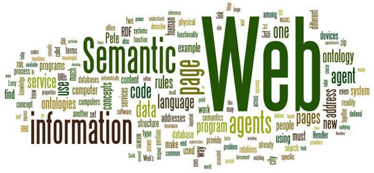

La web semántica (del inglés semantic web) es un conjunto de actividades desarrolladas en el seno de World Wide Web Consortium con tendencia a la creación de tecnologías para publicar datos legibles por aplicaciones informáticas (máquinas en la terminología de la Web semántica).1 Se basa en la idea de añadir metadatos semánticos y ontológicos a la World Wide Web. Esas informaciones adicionales —que describen el contenido, el significado y la relación de los datos— se deben proporcionar de manera formal, para que así sea posible evaluarlas automáticamente por máquinas de procesamiento. El objetivo es mejorar Internet ampliando la interoperabilidad entre los sistemas informáticos usando "agentes inteligentes". Agentes inteligentes son programas en las computadoras que buscan información sin operadores humanos.
La semántica. Es el estudio del significado de los términos lingüísticos. En nuestro contexto de la Web Semántica, se pretende dotar de significado interpretable por parte de las máquinas, como información adicional que pueda ser comprendida y procesada por una computadora. Los Metadatos. Son datos que describen otros datos, en este contexto los datos que describen recursos de la web. La distinción entre datos y metadatos es relativa, pues depende de la aplicación. Los metadatos de una aplicación pueden ser los datos que maneja otra aplicación. Las Ontologías. Una ontología es una jerarquía de conceptos con atributos y relaciones, que define una terminología consensuada para definir redes semánticas de unidades de información interrelacionadas y con ciertas reglas
